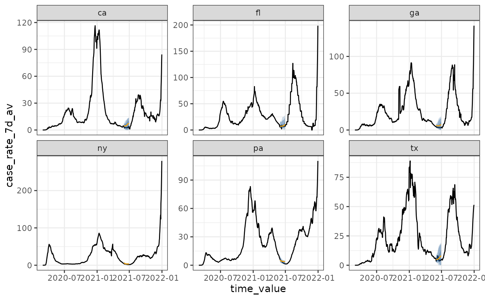
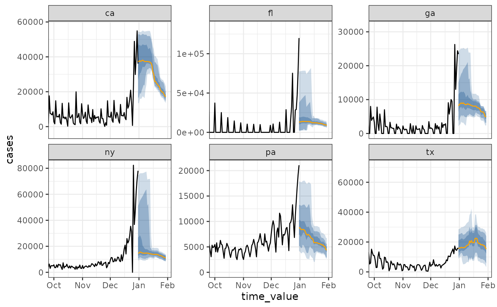

This is another "baseline" type forecaster, but it is especially appropriate
for strongly seasonal diseases (e.g., influenza). The idea is to predict
the "typical season" by summarizing over all available history in the
epi_data. This is analogous to a "climate" forecast rather than a "weather"
forecast, essentially predicting "typical January" behavior by relying on a
long history of such periods rather than heavily using recent data.
Usage
climatological_forecaster(epi_data, outcome, args_list = climate_args_list())Arguments
- epi_data
- outcome
A scalar character for the column name we wish to predict.
- args_list
A list of additional arguments as created by the
climate_args_list()constructor function.
Value
A data frame of point and interval) forecasts at a all horizons
for each unique combination of key_vars.
Details
The point forecast is either the mean or median of the outcome in a small
window around the target period, computed over the entire available history,
separately for each key in the epi_df (geo_value and any additional keys).
The forecast quantiles are computed from the residuals for this point prediction.
By default, the residuals are ungrouped, meaning every key will have the same
shape distribution (though different centers). Note that if your data is not
or comparable scales across keys, this default is likely inappropriate. In that
case, you can choose by which keys quantiles are computed using
climate_args_list(quantile_by_key = ...).
Examples
cases <- cases_deaths_subset
# set as_of to the last day in the data
# "case_rate_7d_av" is on the same scale for all geographies
attr(cases, "metadata")$as_of <- as.Date("2021-12-31")
fcast <- climatological_forecaster(cases, "case_rate_7d_av")
autoplot(fcast)
# Compute quantiles separately by location, and a backcast
# "cases" is on different scales by geography, due to population size
# so, it is better to compute quantiles separately
backcast <- climatological_forecaster(
cases, "case_rate_7d_av",
climate_args_list(
quantile_by_key = "geo_value",
forecast_date = as.Date("2021-06-01")
)
)
autoplot(backcast)

# compute the climate "daily" rather than "weekly"
# use a two week window (on both sides)
# "cases" is on different scales by geography, due to population size
daily_fcast <- climatological_forecaster(
cases, "cases",
climate_args_list(
quantile_by_key = "geo_value",
time_type = "day",
window_size = 14L,
forecast_horizon = 0:30
)
)
autoplot(daily_fcast) +
ggplot2::coord_cartesian(xlim = c(as.Date("2021-10-01"), NA))
